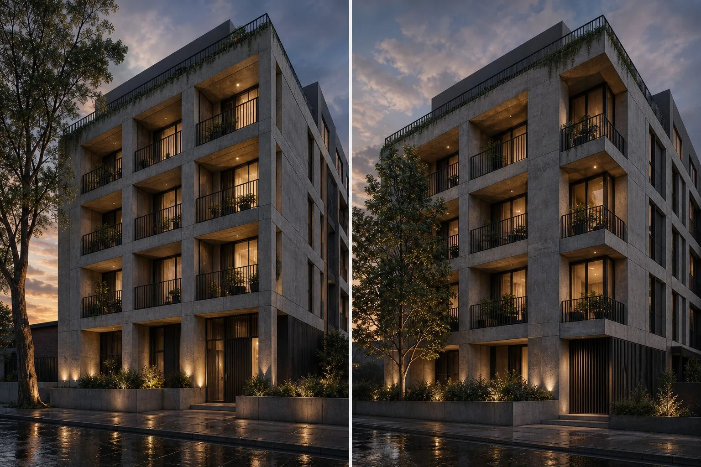
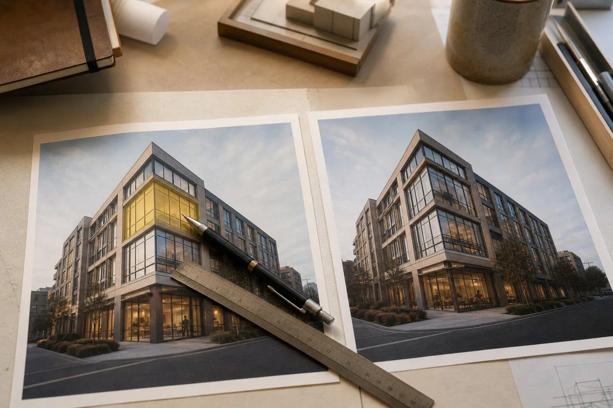

How should architects test multi-angle AI renders?
Render two overlapping cameras from one fixed model, then compare shared geometry, materials, openings and context. A useful multi-angle feature preserves countable design facts across both images. If the second view merely resembles the first in mood, it is generating a sibling, not documenting the same building.
The first image shows six balcony bays. The second shows five and a rather confident tree where the corner bay ought to be. Both are handsome. Together they are evidence against the renderer.
Today's tool sweep surfaced a 2026 roundup from Syntina that describes ReRender AI as offering multi-angle renders alongside sketch-to-image, upscaling and editing. That is a vendor capability reported by a third-party list, not an ArchiGen test result. It is also the right claim to interrogate, because camera continuity separates a useful presentation set from a stack of unrelated hero images.
Architects already know the old version of this problem. A visualizer who changes the window module between views has not found a poetic interpretation. They have made a coordination error. AI does not deserve a softer noun.
What does multi-angle consistency actually mean?
It means shared facts survive a change of viewpoint. The cameras need not share lighting or composition, but any part of the building visible in both should remain recognizably identical. Opening counts, slab edges, parapet heights, material boundaries and fixed site objects are the obvious checks.
Style consistency is easier and less valuable. Two images can share warm dusk light, linen curtains and expensive-looking concrete while disagreeing about the plan. A reference image is very good at making cousins. A coordinated drawing set requires identity.
Matching atmosphere is art direction. Matching the corner is coordination.
The distinction matters because an image set amplifies credibility. One plausible view can pass as a proposal. Four coordinated views imply that a building exists behind them. If no stable object connects those views, the set borrows the authority of a model without doing the work.
Build the camera pair before opening the AI tool
Start in Revit, Rhino, SketchUp, Blender or the source application. Choose two cameras with a useful overlap of roughly one third of the facade or interior. An exterior corner pair works well. So does an interior doorway seen from each adjoining room.
Export plain source images at the same aspect ratio and resolution. Keep field of view, camera height and crop recorded. The AI product may not ingest camera metadata, but the trial record should. Our reference-image provenance register shows the minimum record for source images and rights.
Mark eight to twelve invariants visible in both frames. Pick facts a reviewer can count or trace, not adjectives such as elegant or calm.
| Shared fact | Pass condition | Common contradiction |
|---|---|---|
| Openings | Same count, spacing and proportions | Added bay, merged windows |
| Edges | Corner, roof and slab lines agree | Shifted parapet or floor line |
| Materials | Boundary and scale remain fixed | Stone becomes render around corner |
| Fixtures | Lights, rails and signs retain position | Objects migrate or multiply |
| Context | Fixed walls and mature trees persist | Site objects change species or location |
Do not overload the test. Ten sharp checks beat a cloud of impressions. The geometry hallucination checklist offers a fuller defect vocabulary for the final review.

Use one brief, then permit one repair
Give both source views the same concise material and atmosphere brief. If the product supports a project, seed, scene, reference set or consistency control, record it. Leave defaults visible in the test notes. A hidden hour of setup makes a terrible procurement result look like a feature.
Generate a small fixed number of attempts per camera. Four is enough to see whether consistency is routine or a lottery. Keep every output. The winning pair belongs beside the contact sheet, since a feature that works once in sixteen images creates selection labor and a suspicious archive.
Then permit one local repair to a failed invariant. Ask the product to restore a missing mullion, material boundary or rail without changing the adjacent image. This is where an editor earns its place. If the repair redraws the sky, planting and glazing, the control is another generation button wearing a smaller hat.
Our contact-sheet standard explains why rejected attempts remain evidence. Multi-angle marketing often shows the coherent pair and loses the contradictory relatives.
How do you score two views without inventing precision?
Count contradictions, then record their consequence. A changed chair is irritating. A changed opening can misstate the design. Keep those defects separate.
Use four columns: invariant, Camera A result, Camera B result and repair consequence. Mark each shared fact pass, minor or critical. A critical defect changes primary geometry, code-relevant elements, circulation or a design decision under review. Minor defects include replaceable entourage and loose texture phase, unless those are the subject of the image.
Add operator minutes, attempts and credits. Consistency bought through repeated rerolling is still expensive. The cost-per-usable-image method becomes cost per usable pair here: total trial cost divided by coordinated pairs, not individual pretty images.
Do not turn the result into a universal product score. The pair tests one input route, building type and control setup on a named date. A model-connected product may preserve the corner and struggle with atmosphere. A general image editor may produce sumptuous light and invent the rear elevation. Those are role findings.

When is a multi-angle feature good enough?
For early concept work, the pair may tolerate loose furniture, planting and texture phase if massing, openings and material zones hold. For a planning image, fixed context and facade rhythm require more discipline. For client sign-off, any contradiction in the decision being approved is disqualifying.
A useful product should also make its continuity mechanism legible. Does it use the same model view, a generated scene, image references or an opaque project memory? The answer tells the operator what can be trusted and what must be checked. “Multi-angle” alone describes an output arrangement, not the source of consistency.
This is why the recent fantasy of “make it nice, like the reference” remains a fantasy. It asks one sentence and one picture to carry geometry, materials, taste and coordination. The model will gladly fill the missing instructions. The bill arrives when Camera B reveals what it filled them with.
Should the second view ever be generated from the first?
Only when the intended job is exploratory and the limits are explicit. A first image can steer mood and visible materials, but it cannot reveal geometry hidden behind its camera. Any generated reverse view must invent that information unless another source supplies it.
For design communication, use two model-derived views as the substrate. Let AI change representation, light and surface character. Do not ask a single flat image to become a quiet little BIM model because the interface placed a rotation icon beside it.
The second camera is not a bonus angle. It is a witness.
Evidence note: this article proposes an evaluation method, not an ArchiGen hands-on product test. Sources checked 7 October 2026: Syntina's 2026 tool roundup reporting ReRender AI's multi-angle feature, and current community discussion about reference-led architectural rendering. No ReRender AI performance claim is made.